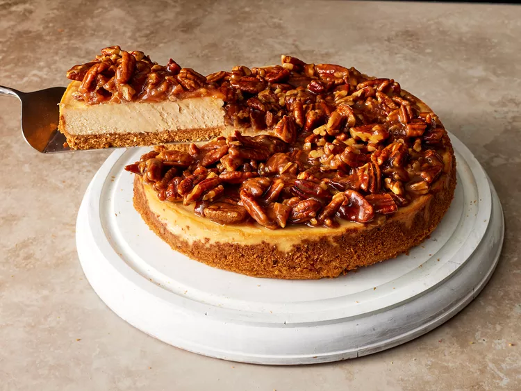

Pecan Pie Cheesecake

This delicious pecan pie cheesecake is the perfect combo of two classics.
Let's bake a creamy cheesecake with crunchy pecan topping.
Ingredients for the crust
- 1 ½ cups of crushed graham crackers
- ¼ cup of finely chopped toasted pecans
- ¼ cup of granulated sugar
- ½ teaspoon of ground cinnamon
- ⅛ teaspoon of kosher salt
- 5 tablespoons of unsalted butter (melted)
Ingredients for the filling
- 3(8 ounce) packages of cream cheese, softened
- 2 cups packed light brown sugar
- 3 large eggs
- 3 tablespoons of sour cream
- 2 tablespoons of all-purpose flour
- 1 teaspoon of vanilla extract
- ⅛ teaspoon of kosher salt
- ¼ teaspoon of ground cinnamon
Ingredients for the topping
- ½ cup packed light brown sugar
- 1 tablespoon of water
- 4 tablespoons unsalted butter
- ½ cup of heavy cream
- 1 tablespoon of dark rum
- ½ teaspoon ground cinnamon
- ½ teaspoon vanilla extract
- 1 ¾ cups coarsely chopped toasted pecans
Directions to baking a Pecan Pie Cheesecake
- Preheat your oven to 350 degrees F (175 degrees C), and spray a 9-inch pan with cooking spray.
- Combine graham cracker crumbs, pecan, sugar, cinnamon and salt in a bowl. Stir in melted butter until your mixture has a sand-like consistency.
- Press your crumb mixture evenly into the bottom and up to the sides of your pan.
- Bake this in the preheated oven until lightly browned and fragrant, about 10 minutes.
- Remove from oven and let it cool for approximately 15 minutes, and also reduce the temperature of your oven to 325 degrees F (165 degrees C).
- Combine cream cheese and brown sugar in a food processor and process it until smooth. Then add 1 egg at a time.
- Add sour cream, flour, vanilla, cinnamon and salt in to your processor and mix it until combined. Once combined, pour batter into your now cooled crust.
- Bake in oven for 45 to 50 minutes.
- Once done, turn off oven and open the door slightly. Let the cheesecake stand inside of the oven for 1 hour.
- After 1 hour, remove the pie and run a knife around the edge of the crust to release it from the pan. Once it's no longer stuck to the pan, cover it with plastic wrap and put it in the fridge for 6 hours or overnight.
- Set a nonstick pan over low heat and add sugar in an even layer. Cook until warm, undisturbed for about 2 minutes.
- Add water and stir util the sugar is melted. Add butter whilst stirring constantly until it's melted and incorporated.
- Increase the heat to medium and add heavy cream, rum, cinnamon and vanilla. Constantly stir until combined and slightly thickened.
- Add pecans whilst stirring, until well coated, and remove from heat. Let it cool until room temperature.
Remove cheesecake from refrigerator, and carefully remove from your pan. Serve and top off with the pecan topping.